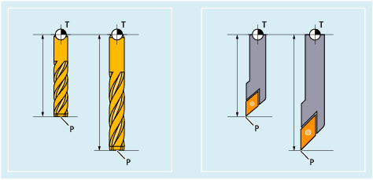

The tool length compensation compensates for the differences in length between the tools used.
The tool length is the distance between the tool carrier reference point and the tool tip:
T | Tool carrier reference point |
P | Tool tip |
This length is measured and entered in the tool compensation memory of the control together with definable wear values. From this data, the control calculates the traversing movements in the infeed direction.
| Note |
The correction value of the tool length depends on the spatial orientation of the tool. |
See also:
Programmed contour and tool path
Tool compensation memory